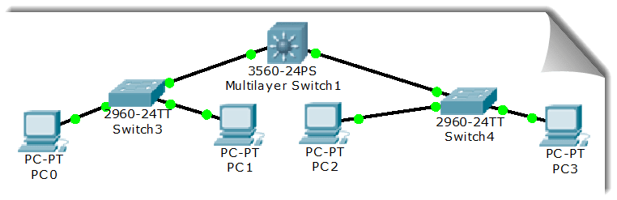
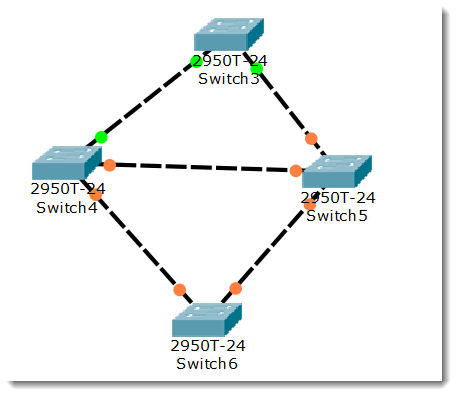
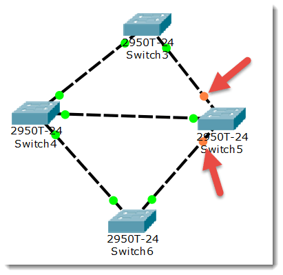
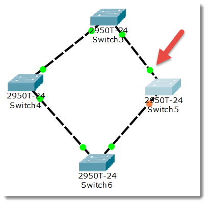
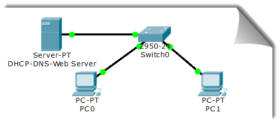
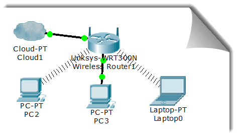

实验教学
实验分为四个部分，请按要求完成。
实验分为四个部分，请按要求完成。
本部分实验请在命令行窗口完成。
使用ipconfig/all查看自己计算机的网络配置，尽可能明白每行的意思。
分析：你和旁边的计算机是否处于同一子网，为什么？
练习ping命令，掌握反馈的意思。
通过ping/?了解ping命令的各种选项并实际使用。
使用tracert或pathping进行路由追踪。
思考为何能进行路由追踪？请实际验证。
以arp -a命令，查看当前arp缓存，并通过网络获得查看缓存的变化。
以arp -s命令将网关设置为静态arp。
使用ipconfig/release释放自动获取的网络配置，并用ipconfig/renew重新获取，了解DHCP。
如果你不能释放，请思考如何处理。
打开C:\WINDOWS\system32\drivers\etc\services文件，了解常用的端口号分配。
练习netstat命令，查看当前的网络连接状况。
练习nslookup命令，进行命令行的DNS解析。
打开C:\WINDOWS\system32\drivers\etc\hosts文件，思考如何屏蔽浏览网页和观看视频时的广告？
访问天佑网站后立即刷新；删除浏览器缓存后再刷新，对比两种情况的速度，了解浏览器缓存的作用。
本部分实验在Wireshark中进行。请访问
Wireshark图文教程
和
中国协议分析网
熟悉其使用。
用Wireshark查看你访问旁边计算机的帧，发出帧的目的MAC地址以及返回帧的源MAC地址是什么？
用Wireshark查看你访问天佑和教务网站的帧，发出帧的目的MAC地址以及返回帧的源MAC地址是什么，为什么？
进行Ping命令各种选项的运行，对-l参数进行Wireshark分析，了解IP包的分段。
使用pathping命令，进行Wireshark分析，了解通过设置TTL来触发TTL过期的ICMP事件。
进行一个DNS解析，用Wireshark进行分析，了解UDP和DNS的使用。
用Wireshark详细分析一次TCP三次握手的过程以及其释放连接的过程。
分析Ethernet帧、IP包和TCP段的格式，明白各层头部每个字段的使用。
本部分实验在Cisco Packet Tracer软件中完成。请同学们先了解VLSM、CIDR、RIP、OSPF、VLAN、STP、NAT及DHCP等概念，以进行网络规划和配置。
了解和熟悉CPT软件的使用。请先阅读使用简介
进行两台PC的基本网络配置，然后直接连接构成一个网络。注意：直接连接需使用交叉线。
相互ping通即可。
构建如下所示的拓扑结构。进行各PC的基本网络配置，要求相互能ping通。
二层交换机是一种即插即用的设备，它对于收到的帧有3种处理方式：广播、转发和丢弃（请弄清楚何时进行何种操作）。那么，要转发成功，则 必须要有端口地址列表即Mac表，该表是交换机通过学习自动得到的！
重新构建以上拓扑结构图并配置各计算机的IP在一个子网，使用右边工具栏中的放大镜点击某交换机如左边的Switch3，可以看到最初交换机的Mac表是空的，也即它不知道该怎样 转发帧。用PC0访问（ping）PC1后，再查看该交换机的Mac表，现在有相应的记录，思考如何得来，随着网络通信的增加，各交换机都将生成自己的Mac表！
构建如下的拓扑，我们可以看到交换机之间有回路，也即会造成广播帧循环即广播风暴，严重影响网络性能。
交换机将通过生成树协议（STP）对多余的线路进行自动阻塞（Blocking），以形成一棵以Switch4为根的唯一路径树即生成树！如下图：
请注意：Switch5的两个端口当前物理连接了，但处于Blocking状态（桔色）
如果某时Switch4与Switch5之间的连接出现问题（我们直接将其剪掉），则该树将自动发生变化如下图：
请注意：Switch5先前Blocking的某端口现在活动了（绿色），但另一个任处于Blocking状态（桔色）
在不同子网间通信需通过路由器。路由器的每个接口下都至少是一个子网，构建如下拓扑，并进行相应的网络规划
上图中，我们模拟了两个学校的连接。说明如下：
对新的路由器，我们必须通过笔记本的串口与其console端口连接进行初次的配置，注意比特率9600
一旦基本配置完成后即可通过telnet进行远程配置。
两个网络远程连接要么通过光纤，要么通过广域网接口即所谓的serial口进行，不可能通过以太网口。如果选用的路由器没有该模块，请在关机状态下添加。
在模拟的广域网连接中需注意DCE和DTE端，在DCE端需配置时钟频率64000
路由器的几种模式：User mode(用户模式)、Privileged mode（特权模式）、Global configuration mode(全局配置模式)、 Interface mode(接口配置模式)、Subinterface mode(子接口配置模式)等。每种模式对应不同的提示符。
交通大学路由器基本配置如下：
以太网口：
Router>en //进入特权模式
Router#conf t //进入全局配置模式
Router(config)#int f0/0 //进入配置以太网口模式
Router(config-if)#ip address 192.168.1.1 255.255.255.0 //配置其IP
Router(config-if)#no shutdown //激活端口
Router(config-if)#exit //退到全局配置模式
Router(config)#
Router(config)#int s0/0 //进入配置广域网口模式
Router(config-if)#ip address 192.168.2.1 255.255.255.0 //配置其IP
Router(config-if)#clock rate 64000 //配置时钟频率
Router(config-if)#no shutdown //激活端口
Router(config-if)#exit //退到全局配置模式
Router(config)#
重庆大学路由器基本配置如下：
以太网口：
Router>en //进入特权模式
Router#conf t //进入全局配置模式
Router(config)#int f0/0 //进入配置以太网口模式
Router(config-if)#ip address 192.168.3.1 255.255.255.0 //配置其IP
Router(config-if)#no shutdown //激活端口
Router(config-if)#exit //退到全局配置模式
Router(config)#
Router(config)#int s0/0 //进入配置广域网口模式
Router(config-if)#ip address 192.168.2.2 255.255.255.0 //配置其IP
Router(config-if)#no shutdown //激活端口
Router(config-if)#exit //退到全局配置模式
Router(config)#
各PC基本配置如下：
| 机器名 | IP | 子网掩码 | 网关 |
|---|---|---|---|
| PC0 | 192.168.1.2 | 255.255.255.0 | 192.168.1.1 |
| PC1 | 192.168.1.3 | 255.255.255.0 | 192.168.1.1 |
| PC2 | 192.168.3.2 | 255.255.255.0 | 192.168.3.1 |
| PC3 | 192.168.3.3 | 255.255.255.0 | 192.168.3.1 |
至此，基本配置完成。你可以ping通同子网的接口，但不能跨子网，为什么？
静态路由是非自适应性路由计算协议，是由管理人员手动配置的，不能够根据网络拓扑的变化而改变。 因此，静态路由非常简单，适用于非常简单的网络。
在当前这个简单的拓扑结构中我们可以使用静态路由，即需要直接告诉路由器到某网络该怎么走。在上述配置情况如下添加如下命令：
交通大学路由器：
Router(config)#ip route 192.168.3.0 255.255.255.0 192.168.2.2 //到3.0这个网络的下一跳是2.2
Router(config)#exit //退到全局配置模式
Router#show ip route //查看路由表
Router(config)#ip route 192.168.1.0 255.255.255.0 192.168.2.1 //到1.0这个网络的下一跳是2.1
Router(config)#exit //退到全局配置模式
Router#show ip route //查看路由表
Router(config)#ip route 0.0.0.0 0.0.0.0 *.*.*.* //缺省全部转发给*.*.*.*
至此，这些PC能全部相互ping通！
动态路由协议采用自适应路由算法，能够根据网络拓扑的变化而重新计算机最佳路由。 由于路由的复杂性，路由算法也是分层次的，通常把路由协议（算法）划分为自治系统(AS)内的(IGP,Interior Gateway Protocol)与自治系统之间(EGP,External Gateway Protocol)的路由协议。
RIP的全称是Routing Information Protocol，是距离矢量路由的代表，目前虽然淘汰，但可作为我们学习的对象。
配置RIP前请使用no命令清除静态路由！配置如下：
Router(config)#router rip //启用RIP路由协议
Router(config-router)#network 192.168.1.0 //1.0与我直连
Router(config-router)#network 192.168.2.0 //2.0与我直连
Router(config-router)#^z //直接退到全局配置模式
Router#show ip route //查看路由表
Router(config)#router rip //启用RIP路由协议
Router(config-router)#network 192.168.3.0 //1.0与我直连
Router(config-router)#network 192.168.2.0 //2.0与我直连
Router(config-router)#^z //直接退到全局配置模式
Router#show ip route //查看路由表
至此，这些PC能全部相互ping通！可以使用debug ip rip开启RIP诊断（no debug ip rip 关闭RIP诊断），可看到路由器之间发送的距离矢量信息。
OSPF(Open Shortest Path First开放式最短路径优先)是一个内部网关协议(Interior Gateway Protocol,简称IGP)， 用于在单一自治系统(autonomous system,AS)内决策路由。 OSPF协议比较复杂（version 2 RFC 2328标准文档长达224页），可以划分区域是OSPF能多适应大型复杂网络的一个特性， 我们只借助完成单个area的简单配置，另外OSPF还支持变长子网掩码VLSM。
配置OSPF前请使用no命令清除RIP路由！配置如下：
Router(config)#router ospf 1 //启用OSPF路由协议，进程号为1
Router(config-router)#network 192.168.1.0 0.0.0.255 area 0 //自治域0中的属于1.0/24网络的所有端口（方向掩码）参与OSPF
Router(config-router)#network 192.168.2.0 0.0.0.255 area 0 //自治域0中的属于2.0/24网络的所有端口（方向掩码）参与OSPF
Router(config-router)#^z //直接退到全局配置模式
Router#show ip route //查看路由表
Router(config)#router ospf 1 //启用OSPF路由协议，进程号为1
Router(config-router)#network 192.168.3.0 0.0.0.255 area 0 //自治域0中的属于3.0/24网络的所有端口参与OSPF
Router(config-router)#network 192.168.2.0 0.0.0.255 area 0 //自治域0中的属于2.0/24网络的所有端口参与OSPF
Router(config-router)#^z //直接退到全局配置模式
Router#show ip route //查看路由表
至此，这些PC能全部相互ping通！可以使用debug ip ospf events开启OSPF诊断（no debug ip ospf events 关闭诊断），
可看到路由器之间发送的Hello信息用以诊断当前的链路是否发生改变以便进行调整（事件触发而非定时更新！）。
network 192.168.1.128 0.0.0.127 area 0这样的命令，表明1.128/25网络内的所有端口参与OSPF。网络地址转换(NAT,Network Address Translation)被广泛应用于各种类型Internet接入方式和备种类型的网络中。 原因很简单，NAT不仅完美地解决了lP地址不足的问题，而且还能够有效地避免来自网络外部的攻击，隐藏并保护网络内部的计算机。 NAT的实现方式有三种，即静态转换Static Nat、动态转换Dynamic Nat 和 端口多路复用OverLoad。
端口多路复用是指改变外出数据包的源端口并进行端口转换，即端口地址转换(PAT，Port AddressTranslation)。 采用端口多路复用方式。内部网络的所有主机均可共享一个合法外部IP地址实现对Internet的访问，从而可以最大限度地节约IP地址资源。 同时，又可隐藏网络内部的所有主机，有效避免来自internet的攻击。因此，目前网络中应用最多的就是端口多路复用方式。
在上述路由配置成功的前提下，保留交大内部的网络号为私有的网络号，修改交大与重大之间的网络号为202.202.240.0/24，
重大内部网络号为202.202.243.0/24（即外部网络号），重新配置端口和路由，且在重大内部设置一台服务器，
地址为202.202.243.2/24，配置其为一台Web服务器。
接下来，在交大路由器做如下配置：
Router(config)#access-list 1 permit 192.168.1.0 0.0.0.255 //生成一个ACL
Router(config)#ip nat inside source list 1 interface s0/0 overload //来自于ACL中的IP将在广域网口做PAT
Router(config)#int f0/0
Router(config-if)#ip nat inside //配置以太网口为NAT的内部
Router(config-if)#exit
Router(config)#int s0/0
Router(config-if)#ip nat outside //配置广域网口为NAT的外部
Router(config-if)#^z
Router#show ip nat translations //查看实时转换情况
此时分别用交大内部的不同PC访问重大的Web服务器，可看到详细的转换情况！
在实际应用中（如我校的网络），你可看到路由器只用于网络边界，而内部大量使用交换机连接。前面我们分析过，交换机连接的是一个子网！ 显然，在这样一个大型的子网中广播风暴将不可抑制，同时我们已经知道学校有N多个子网，这些交换机连接的绝不是一个子网！ 我们实际上使用了支持VLAN和VTP技术的交换机！而前述的交换机只是普通的2层交换机。
VLAN(Virtual Local Area Network)即虚拟局域网。VLAN可以把同一个物理网络划分为多个逻辑网段即一个子网，因此，VLAN可以抑制网络风暴，增强网络的安全性。如下图所示：
我们在交换机上创建3个VLAN，每个VLAN各拥有8个端口。配置如下：
Switch>en
Switch#conf t
Switch(config)#vlan 10 //创建id为10的VLAN（缺省的，交换机所有端口都属于VLAN1，不能使用）
Switch(config-vlan)#name computer //设置别名
Switch(config-vlan)#exit
Switch(config)#int vlan 10 //该VLAN即为一个子网，设置其IP，作为该子网网关
Switch(config-if)#ip add 192.168.0.1 255.255.255.0
Switch(config-if)#exit
Switch(config)#vlan 20 //创建id为20的VLAN
Switch(config-vlan)#name communication //设置别名
Switch(config-vlan)#exit
Switch(config)#int vlan 20
Switch(config-if)#ip add 192.168.1.1 255.255.255.0
Switch(config-if)#exit
Switch(config)#vlan 30 //创建id为20的VLAN
Switch(config-vlan)#name electronic //设置别名
Switch(config-vlan)#exit
Switch(config)#int vlan 30
Switch(config-if)#ip add 192.168.2.1 255.255.255.0
Switch(config-if)#exit
Switch(config)#int range f0/1-8 //成组配置接口（1-8）
Switch(config-if-range)#switchport mode access //设置为存取模式
Switch(config-if-range)#switchport access vlan 10 //划归到VLAN10中
Switch(config-if-range)#exit
Switch(config)#int range f0/9-16
Switch(config-if-range)#switchport mode access
Switch(config-if-range)#switchport access vlan 20
Switch(config-if-range)#exit
Switch(config)#int range f0/17-24
Switch(config-if-range)#switchport mode access
Switch(config-if-range)#switchport access vlan 30
Switch(config-if-range)#^Z
Switch#show vlan
各PC配置如下：
| 机器名 | 连接的端口 | 所属VLAN | IP | 子网掩码 | 网关 |
|---|---|---|---|---|---|
| PC0 | F0/1 | VLAN 10 | 192.168.0.2 | 255.255.255.0 | 192.168.0.1 |
| PC1 | F0/2 | VLAN 10 | 192.168.0.3 | 255.255.255.0 | 192.168.0.1 |
| PC2 | F0/17 | VLAN 30 | 192.168.2.2 | 255.255.255.0 | 192.168.2.1 |
| PC3 | F0/9 | VLAN 20 | 192.168.1.2 | 255.255.255.0 | 192.168.1.1 |
| PC4 | F0/10 | VLAN 20 | 192.168.1.3 | 255.255.255.0 | 192.168.1.1 |
| PC5 | F0/18 | VLAN 30 | 192.168.2.3 | 255.255.255.0 | 192.168.2.1 |
| PC6 | F0/19 | VLAN 30 | 192.168.2.4 | 255.255.255.0 | 192.168.2.1 |
此时你可以看到，只有在同一VLAN中的PC才能通信，且广播也局限于该VLAN。
而在实际应用中，我们绝不允许在这些支持VLAN的交换机上进行随意的VLAN划分，如此将造成管理混乱！VLAN的划分必须得到统一的规划和管理，这就需要VTP协议。
VTP(VLAN Trunk Protocol)即VLAN中继协议。VTP通过网络(ISL帧或Cisco私有DTP帧)保持VLAN配置统一性，也被称为虚拟局域网干道协议，它是思科私有协议。 VTP在系统级管理增加，删除，调整VLAN，自动地将信息向网络中其它的交换机广播。
此外，VTP减小了那些可能导致安全问题的配置，也便于管理，只要在VTP Server做相应设置，VTP Client会自动学习VTP Server上的VLAN信息。
构建如下拓扑结构：
其中，两个2960交换机和核心的3560交换机使用Gbit口相连。
Cisco 3560交换机是局域网中的核心交换机，将其作为VTP Server，VLAN在其上创建。配置如下：
Switch(config)#hostname 3560 //更改交换机名称
3560(config)#vtp domain cqjtu //设置VTP域名称
3560(config)#vtp mode server //设置其为VTP服务器
3560(config)#vlan 2 //新建VLAN2（缺省的，交换机所有端口都属于VLAN1，不能使用）
3560(config-vlan)#name computer //别名
3560(config-vlan)#exit
3560(config)#vlan 3 //再建VLAN3
3560(config-vlan)#name communication //别名
3560(config-vlan)#exit
3560(config)#int vlan 2 //配置接口VLAN2，它将是该子网的网关
3560(config-if)#ip address 192.168.1.1 255.255.255.0
3560(config-if)#exit
3560(config)#int vlan 3 //配置接口VLAN2，它将是该子网的网关
3560(config-if)#ip address 192.168.2.1 255.255.255.0
两个Cisco 2960交换机是作为局域网中的汇聚层/接入层交换机，将其作为VTP Client，自己决定哪些端口划入哪个VLAN。左边交换机配置如下：
Switch(config)#hostname 2960A //更改交换机名称
2960A(config)#vtp domain cqjtu //加入名为cqjtu的VTP域
2960A(config)#vtp mode client //设置其为VTP客户
2960A(config)#int g1/1 //配置与核心交换机连接的端口
2960A(config-if)#switchport mode trunk //设置该端口为中继（trunk）模式
2960A(config-if)#switchport trunk allowed vlan all //允许为所有的VLAN中继
2960A(config-if)#exit
2960A(config)#int f0/1 //将接口1划分到VLAN2
2960A(config-if)#switchport mode access
2960A(config-if)#switchport access vlan 2
2960A(config-if)#exit
2960A(config)#int f0/2 //将接口2划分到VLAN3
2960A(config-if)#switchport mode access
2960A(config-if)#switchport access vlan 3
右边交换机2960B与此类似，请参照配置。
此时在3个交换机的特权模式下，都可使用show vtp status命令查看VTP状态，使用show vlan命令查看VLAN状态
各PC基本配置如下：
| 机器名 | 连接的端口 | 所属VLAN | IP | 子网掩码 | 网关 |
|---|---|---|---|---|---|
| PC0 | 2960A-F0/1 | VLAN 2 | 192.168.1.2 | 255.255.255.0 | 192.168.1.1 |
| PC1 | 2960A-F0/2 | VLAN 3 | 192.168.2.2 | 255.255.255.0 | 192.168.2.1 |
| PC2 | 2960B-F0/1 | VLAN 2 | 192.168.1.3 | 255.255.255.0 | 192.168.1.1 |
| PC3 | 2960B-F0/2 | VLAN 3 | 192.168.2.3 | 255.255.255.0 | 192.168.2.1 |
至此，基本配置完成。同VLAN可以ping通，而不同VLAN不行（即使配置为同一子网），且得到统一规划和管理。
目前的问题是：广播风暴抑制了，但VLAN间的正常通信如何进行？
此时我们需要所谓的独臂路由器为其进行转发！因为我们的核心交换机是个3层交换机，也称路由交换机，即具有路由功能，因此配置如下
3560(config)#int g0/1 //配置该接口
3560(config-if)#switchport trunk encapsulation dot1q //封装VLAN协议
3560(config-if)#switchport mode trunk //中继模式
3560(config-if)#switchport trunk allowed vlan all //转发所有VLAN
3560(config-if)#exit
3560(config)#int g0/2 //配置该接口
3560(config-if)#switchport trunk encapsulation dot1q //封装VLAN协议
3560(config-if)#switchport mode trunk //中继模式
3560(config-if)#switchport trunk allowed vlan all //转发所有VLAN
3560(config-if)#exit
3560(config)#ip routing //启用路由功能
至此，各VLAN可以正常通信。
动态主机配置DHCP、域名解析DNS以及Web服务在日常应用中作用巨大，我们构建如下的拓扑练习。
| 机器名 | 配置项目 | 说明 |
|---|---|---|
| Server | Web | 开启即可 |
| Server | DNS | 202.202.243.2：www.google.com、www.baidu.com |
| Server | DHCP | 地址池开始地址：202.202.243.10/24，并返回网关和DNS地址 |
| PC | 网络配置 | 自动获取 |
构建如下的WLAN，在有线或无线连接的PC上以Web方式配置
本部分实验在网络实验室中进行。